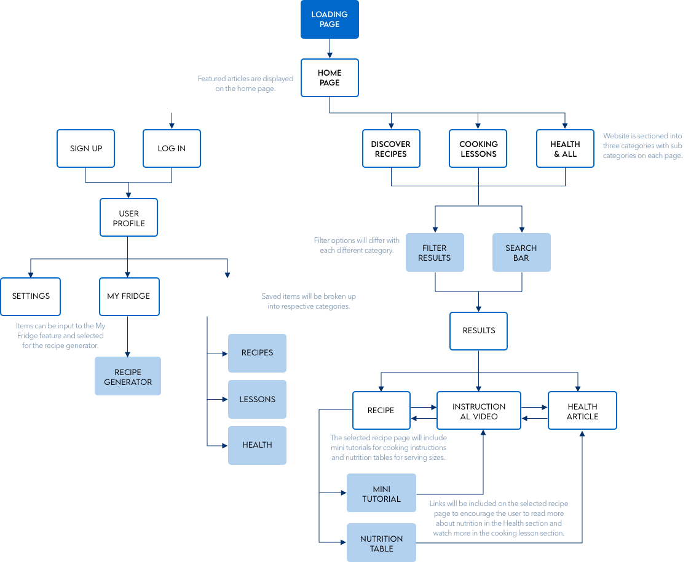

The Unseasoned Chef
Overview
Cooking can seem intimidating for beginners or even for the intermediate-level chef. The Unseasoned Chef is a recipe and food-based app to provide a central location for newcomers and novices alike. With a multitude of educational resources to get users comfortable around the kitchen, they’ll be able to move onto bigger and more complex recipes in the future and potentially move away from recipes altogether.
Objective
This is a responsive web application that will provide beginner chefs with cooking lessons, recipe discovery, and healthy eating tips for users who want to become more comfortable in the kitchen.
Challenge
How can we provide both the necessary information and useful tips in a seamless, efficient way? What would help the user feel more comfortable in their kitchens?
Role
UX Designer
- Competitor/SWOT analysis
- User Interviews
- User Personas
- User Flows
- User Testing
UI Designer
- Mood Boards
- Style Guide
- Visual Design
- Preference Testing
Process
To create an application that provided a unique, educational experience, I had to understand what products were already on the market. This preparation required a competitor analysis to determine some general strengths and weaknesses from
the pre-existing products as well as what these applications use as marketing advantages to target key audiences.
Keeping these analyses in mind, I then organized and held interviews with people in our target audience demographic, using people of various ages, diets, stages of life, and cookind levels to discern common paint points and intriguiging
potential key features.
60% of users had dietary restrictions that informed their nutrition intake and cooking goals
90% of users started cooking to control what they were putting in their bodies.
80% of users claim their journey to comfort in the kitchen began when they went college.
Based on these findings, I created three user personas to inform my preliminary sketches and wireframes, focusing on key features like instructional videos and a diet filter option.
Sketches
After some speed-sketching exercises to explore all layout ideas, I landed on these loosely drawn designs as a jumping off point. With these sketches, I conducted usability testing to ensure a cohesive and efficient user flow.
User Flow
The results of these tests led to important features and design additions:
- Food preparation filter/search by cooking style
- More access to search bar on the main page
After perfecting the user flows and designs in the usability testing, I began designing the low-, mid-, and high-fidelity wireframes.